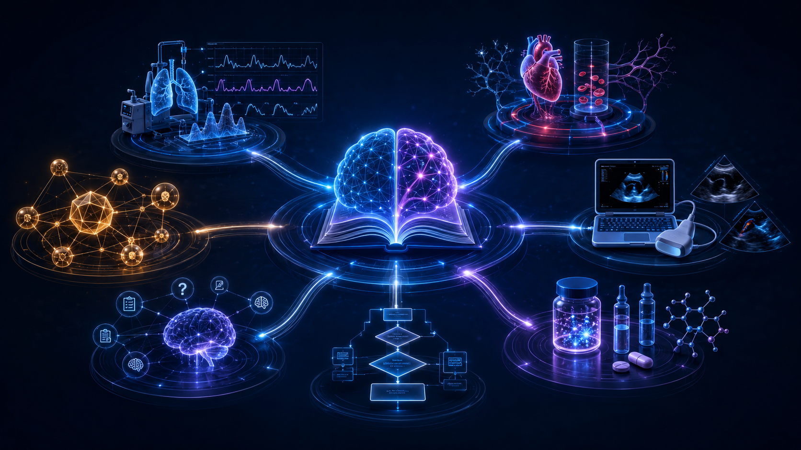
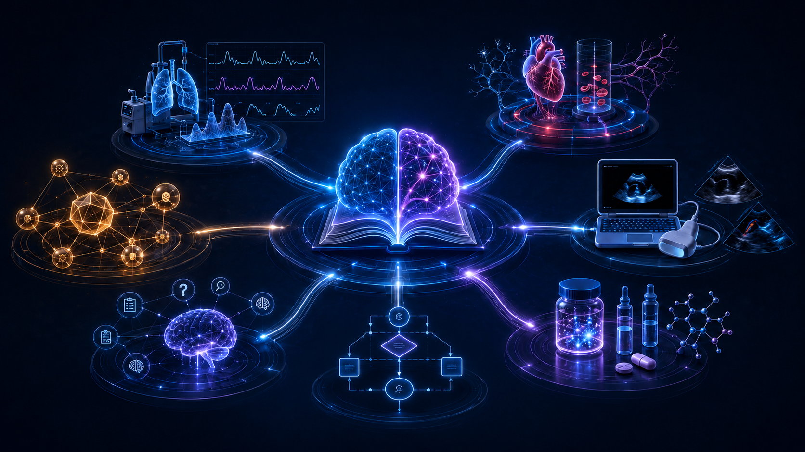

@TEMI360XINFINIT
Gerador e metodologia
Define o motor, a linguagem visual e a expansão didático-cognitiva. No grafo, DERIVA produtos visuais.
U3 · IMAGENS · ENGENHARIA COGNITIVA
produto auditado · publicação bloqueada
Duas imagens geradas por IA no projeto, transformadas em produtos catalogáveis, acessíveis e conectados ao Mapa Vivo — sem duplicar o atlas Turbo TEMI já preservado.
UMA FONTE · DOIS PAPÉIS
Os dois projetos web são faces complementares do mesmo organismo visual.
@TEMI360XINFINIT
Define o motor, a linguagem visual e a expansão didático-cognitiva. No grafo, DERIVA produtos visuais.
@BIBLIOTECAVISUAL
Organiza códigos, alternativas textuais, versões e rotas. No grafo, REPRESENTA o mesmo conjunto.
NEXUS COSMOS
Une imagens, ACRA, questões, referências e auditoria sem criar vinte produtos semânticos duplicados.
DO CHAT AOS BYTES SERVIDOS
As artes foram preservadas em PNG com seus hashes e credenciais C2PA. Anatomia, monitores e ultrassom são elementos sintéticos e ilustrativos; não representam exames reais nem orientam diagnóstico.


TEIA VIVA · SEM DUPLICAÇÃO
###U3 · ###IMAGENS · ###DIDATICO-COGNITIVO · #BibliotecaVisual · #TEMI360XINFINIT · #AtlasVisual
SEGUNDA CHECAGEM
Inspeção visual sem pessoa, nome, prontuário, instituição, rosto, voz ou dado identificável.
Credenciais C2PA preservadas indicam geração algorítmica pelo OpenAI Media Service API; nenhuma figura de terceiro foi identificada. A proveniência não declara exclusividade sobre resultados semelhantes.
PNG válido, 1672 × 941, hashes SHA-256 conferidos, alternativas textuais e CSP local.
Publicação oficial bloqueada. Consulte product.manifest.json para HOM/TOM/TAF. Exige o comando literal correspondente.
Auditoria: AUD###-IMGT-20260801-0002-B16AA83A
REFERÊNCIAS DE MÉTODO